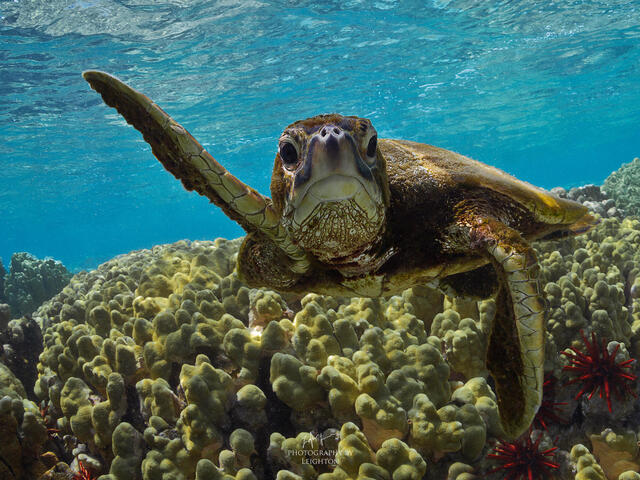

Naturaleza
Naturaleza
La naturaleza es la esencia misma de la vida, un reflejo del universo que nos rodea. En ella encontramos serenidad, belleza y conexiones profundas con todos los seres vivos. Nos enseña lecciones de paciencia, resiliencia y renovación, recordándonos nuestra interconexión con el mundo que nos rodea. En sus paisajes encontramos inspiración y refugio, y en sus ciclos eternos vemos la promesa de crecimiento y transformación constante. La naturaleza es nuestra maestra silenciosa, invitándonos a explorar, soñar y descubrir la vastedad del universo dentro y fuera de nosotros mismos.

El Gran Cañón de Estados Unidos se ubica en el estado de Arizona y se extiende en un total de 493 mil hectáreas. Según la organización de Naciones Unidas, su inmensidad es asombrosa y se formó durante 6 millones de años de actividad geológica y erosión por el río Colorado en la corteza terrestre levantada. Fue declarado patrimonio natural en 1979.

Shiretoko es una península japonesa ubicada en el noroeste de la Isla Hokkaido. Declarado patrimonio natural de la Unesco en 2009, este sitio de 71 mil hectáreas funciona como ecosistema marino y terrestre para una basta cantidad de especies, muchas de ellas en peligro de extinción como el búho pescador de Blackiston.

En los Balcanes búlgaros, el Parque Nacional Pirin ocupa 38 mil hectáreas, de acuerdo con información de Unesco. Este sitio montañoso de piedra caliza posee picos que alcanzan los 2000 metros de altura e incluye más de 70 lagos glaciares, cascadas, pedregales rocosos y cuevas. Fue declarado patrimonio natural en 1983.

Este parque nacional canadiense se ubica en la región centro y norte del país, ocupando un total de cuatro millones de hectáreas y alberga la mayor población de bisontes salvajes de América del Norte. El parque fue declarado patrimonio natural en 1983.

El área protegida más grande del Amazonas sudamericano se encuentra en Brasil y es una de las regiones más ricas del planeta en términos de biodiversidad. Fue declarado patrimonio natural en 2000 y abarca un total de 5 millones de hectáreas de bosque amazónico.

El bosque de Sundarbans en Bangladesh es un manglar, el más grande del mundo según señala la organización de Naciones Unidas. Fue declarado patrimonio natural en 1997 y se caracteriza por poseer una red compleja de vías fluviales de marea, marismas y pequeñas islas de bosques de manglares. Esta área de 139 mil hectáreas incluye una amplia gama de fauna como el tigre de bengala y el cocodrilo de estuario.

Los bosques de eucalipto y las mesetas calizas son dos ejemplos de ecosistemas que pueden encontrarse dentro de esta región australiana que abarca 1 millón de hectáreas del continente australiano. Fue declarado patrimonio natural por la Unesco en el año 2000 y sus mesetas de arenisca constituyen una de las extensiones más grandes e intactas de matorrales protegidos en Australia.

El Parque Nacional Iguazú alberga una de las cataratas más espectaculares del mundo que une la frontera entre Brasil y Argentina. La selva de Iguazú ocupa un total de 55 mil hectáreas de selva tropical y fue declarada patrimonio natural en 1984. Es hogar de más de 2000 especies de plantas y animales regionales.

Inscripta en 2008 como patrimonio natural mundial, las 32 mil hectáreas del noroeste suizo presentan siete picos elevados por encima de los 3 mil metros de altura. De acuerdo con la Unesco “el sitio se distingue por la clara exposición tridimensional de las estructuras y ha sido clave para las ciencias geológicas desde el siglo XVIII”.
Las selvas tropicales albergan una rica biodiversidad, desde el majestuoso jaguar, el felino más grande de América, hasta el exótico y colorido colibrí, el ave más pequeña del mundo. Las orquídeas, con sus flores exóticas y formas intrigantes, compiten por la atención con las gigantescas ceibas y las enredaderas serpenteantes. Estos ecosistemas son vitales para nuestro planeta, proporcionando oxígeno, regulando el clima y albergando una variedad asombrosa de vida que nos inspira con su belleza y nos desafía con su complejidad.